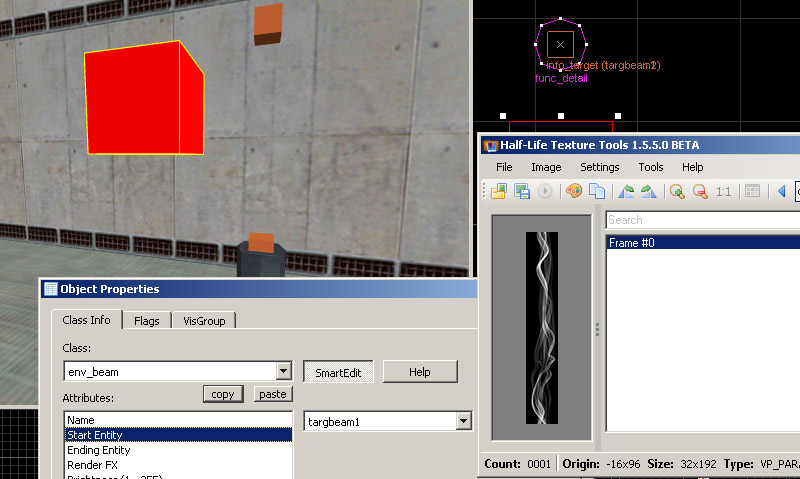

Beam sprites are generally rectangular sprites that can only be made in additive mode. A beam is used either from a simple "env_laser" or the full-featured "env_beam" entity. Beams render between two points and can be a straight line or in ring mode which curves the beam as a circle*. They also have several main effects known as "scroll", "beam width" and "noise". Scroll loops the sprite image vertically from bottom to top. Beam width is basically the with of the beam, and noise causes the beam to shake between the points for a lightning effect. One issue with noise is that the effect can look bad on wider beams due to additive overlaps on the points where the beam changes direction.
*Ring mode is only for env_beam has a far more complicated setup used with func_trains riding on path_corners as targets.
1) Begin by creating a new document with a black fill (in additive, black is transparent and anything else appears as light). Ive created a wavy sine wave.Now it is strongly recommended that you test your image vertical loop (used by the scroll effect) by using the offset filter using vertical offset and fixing any discrepancies. An example of using offset can be found here with another beam sprite. Scale the image to a GoldSrc friendly image size which is a divisible by 16 number. In this case I used 64X128.
2) When finished convert the image to indexed color just like in Step1, or if you don't wish to do dithering or controlled palettes just save it as BMP24 and let HL-Texture tools do the conversion.
2a)Then open up half-life texture tools and go to Tools>Create new sprite... then click "add new images". Add your newly created BMP.
2b)Go to the number 2 "Settings" tab and select "Additive" as your texture format. For sprite format leave as default "parallel". Click tab 3 and save the sprite in your sprite directory just as before in Part1, Step4
5) Open up hammer or J.A.C.K and create an env_laser. Click the "..." box next to the "Sprite Name" path to bring up the search path. Select your sprite. For "laser target" you can choose a named info_target. I went with"lasertarget" on the right spike. Keep in mind that moving entities such as func_train can be targeted too.
An important thing to do first is set your "beam color" to [255 255 255] as a starting point, as leaving this field blank or at [0 0 0] will result in a totally invisible beam. Since I'm using an already coloured beam i'm leaving it at [255 255 255].
Set your beam width, brightness (i'm using 255 for brightest), and scroll rate (note: you cannot use negative scroll rate values or it glitches out. Also scroll goes from end to beginning direction). Here I'm making a simple scrolling wavy effect using a scroll rate of 10. My set flags for this env_laser are "start on", "spark start", "spark end". Lastly set "0" for life to set for the beam to stay on.
6)Compile the map and observe. As seen here the additive effect is better when used in a darkened area. Even though this is a still image, the scroll effect gives a nice movement look.
I will also show three other effects. Here I will be creating a smoke effect that scrolls and fades out. Create 2 info_targets and then create an env_beam. For starting entity and ending entity choose the 2 info_targets and then use the same settings as the env_laser, only this time go to flags tab and set "Shade End".
A quick rundown of the entity setup is as follows:
env_beam:Starting entity:targbeam1,Ending entity:targbeam2, Texture scroll rate:8, Brightness 100, Noise:2,
Next, I will create a func_train that is targeted by two env_beams and info_targets. This will demonstrate the moving beam. Here I have 2 env_beams targeting a func_train and 2 info_targets. The func_train rides on a ring of path_corners and is autostarted in motion on map load by a trigger_auto entity.
A rundown of the entities
env_beam:Name:topbeam, Starting entity:topplate,Ending entity:object,
9)Lastly a demonstration of "Ring" mode for env_beam.
env_beam:Name:ring, Starting entity:train1,Ending entity:train2,Beam color:0 230 255, flags:"start on","ring"
If you want a wavy or even some sort of details in your sprite ring or beam instead of a repeating beam like you see, you would have to make the image much taller, say a 1:8 or 1:16 ratio image.
Lastly for other examples of beam and sprites, you can find an example map in steam's Half-Life SDK called "env_beam.map" (C:\Program Files (x86)\Steam\steamapps\common\Half-Life SDK\Map Files).
Another good use of sprites is this tutorial on TWHL called "Beam and Sprites. Sven Co-Op manor also has a good section on sprite and beam effects here.
This concludes the tutorial.
{kind=link}